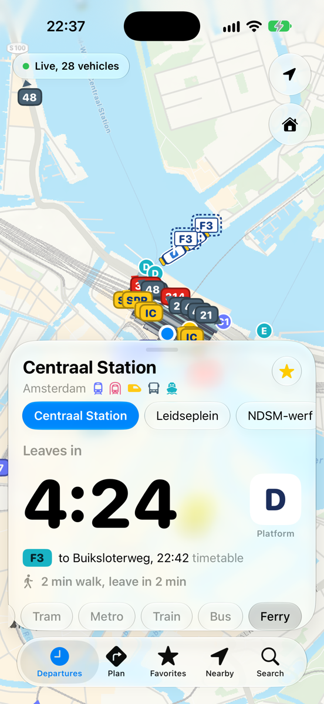
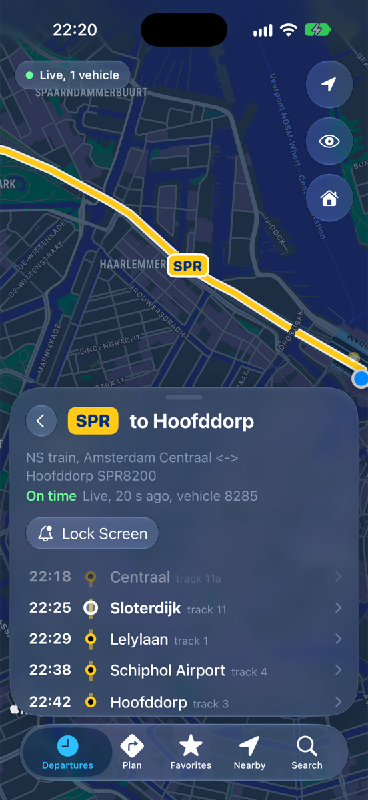
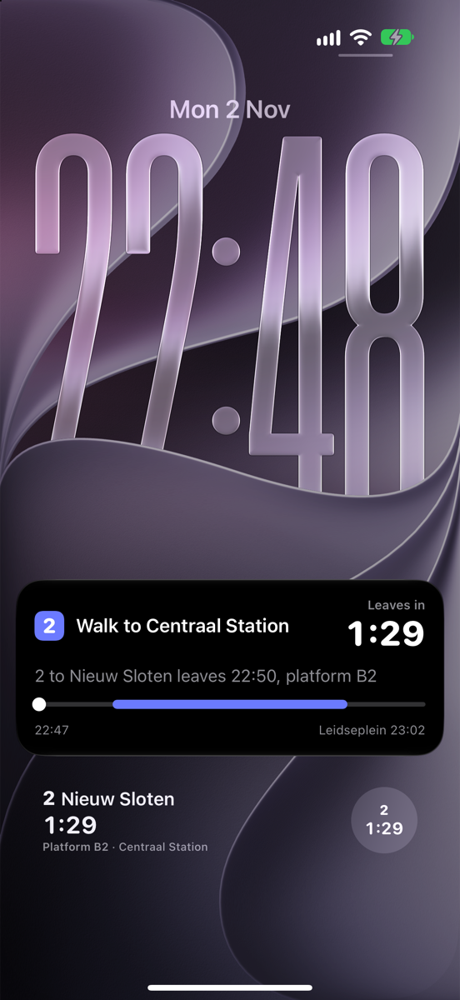
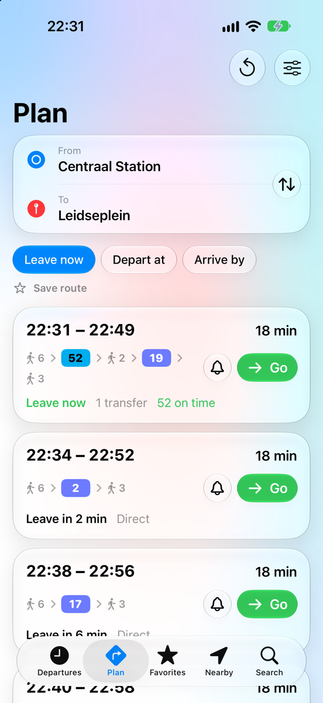
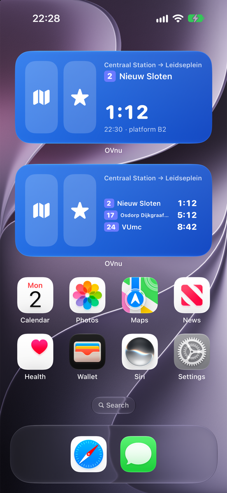
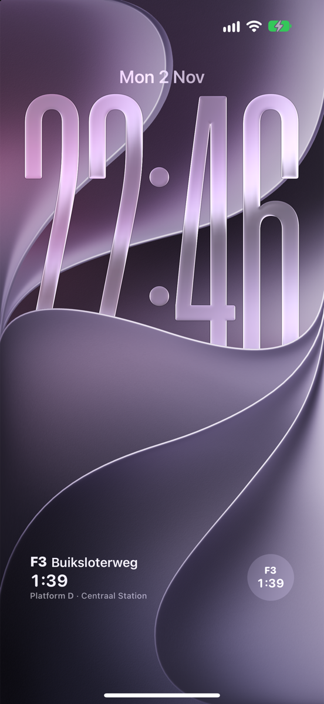

OV weer simpel.
Elke bus, tram, metro, trein en pont, live. Zonder rommel, zonder reclame. Gewoon wat je nú nodig hebt.
Gratis. Geen account, geen advertenties. Een fooi kan, hoeft niet.
Vertrekt over
Dit is geen voorbeeld. Deze treinen rijden echt.
Hoe lang nog. Waar is hij. Onderweg.
Drie vragen, drie schermen. Meer heb je niet nodig om de deur uit te gaan.

Hoe lang nog?
Een grote countdown, het perron of de steiger, en of je het haalt met je looptijd erbij.

Waar is hij?
Elke bus, tram, metro, trein en pont live op de kaart. Tik op een lijn en je ziet alleen die.

Onderweg
Druk op Go en je reis loopt mee op je toegangsscherm: wanneer je vertrekt, waar je overstapt.

Plannen, of gewoon naar huis
Metro 52 naar Vijzelgracht, dan tram 19 naar het Leidseplein. Of één tik: Breng me naar huis.

Je vaste route
Alle trams, metro's, bussen, treinen of ponten, in één lijst. Ook als widget.

Op je toegangsscherm
Je volgende trein, metro, tram, bus of pont. Inclusief spoor of halte, zonder je telefoon te openen. Live!
Je locatie wordt alleen gebruikt om haltes en routes te vinden, en nergens bewaard. Je favorieten staan in je eigen iCloud.